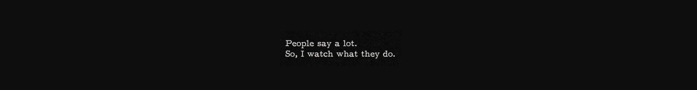
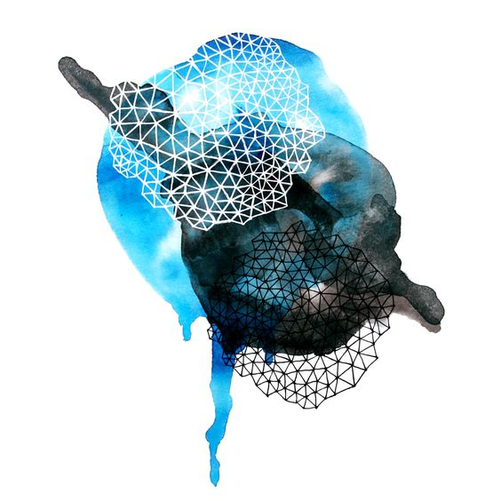
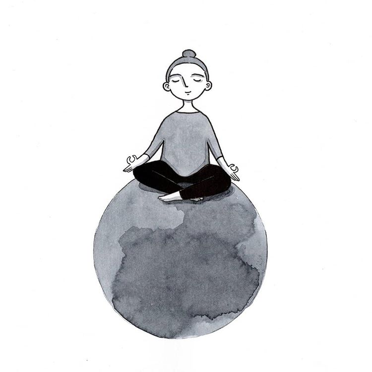
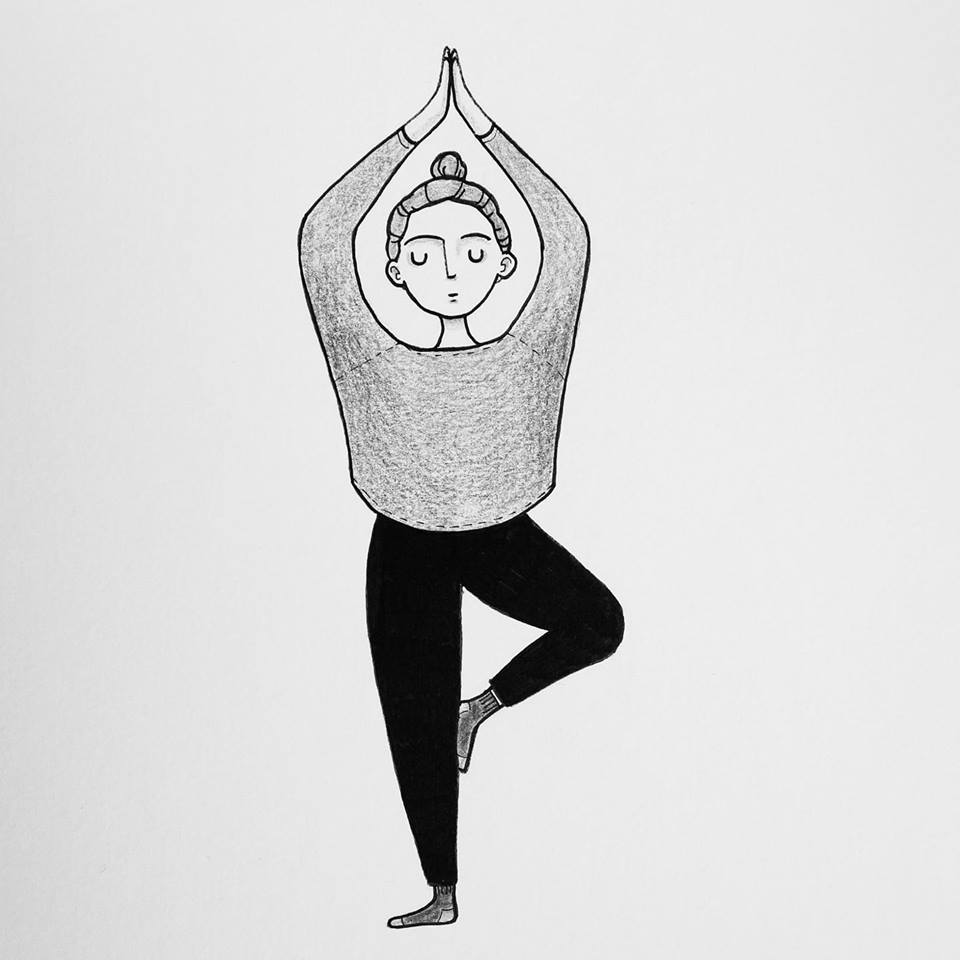
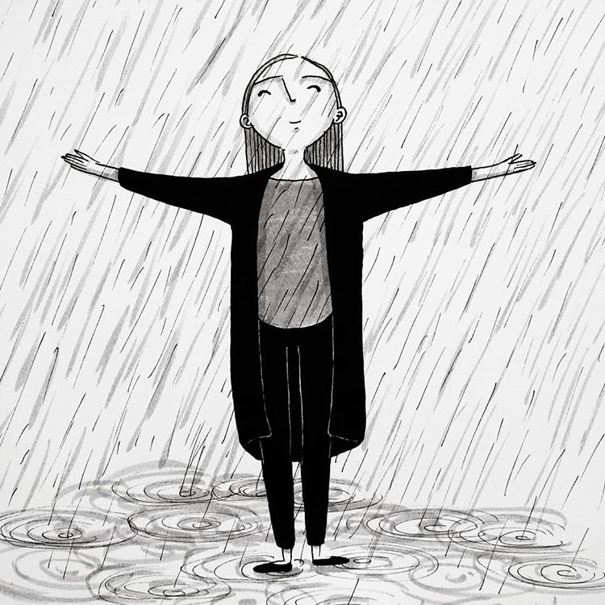
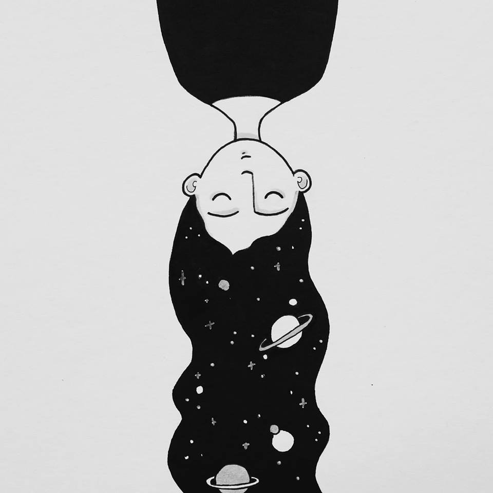

Vitajte!!
Na začiatku by som vás rada privítala na mojej stránke, ktorá sa bude dúfam každou hodinou kurzu zlepšovať. Pristupujem ku všetkému vo svojom živote spôsobom "pokus/omyl" a ani v tomto prípade to nebude inak. Ak ste sa dostali až sem, tak to znamená, že základy som zvládla. Tak mi držte palce.
Všeobecné informácie
Volám sa Katarína a som zo Slovenska. Na Slovensku ale nežijem už 9 kokov. Vyštudovala som marketing v Trnave. Po ukončení vysokej školy som sa presťahovala do Berlína, kde som žila viac ako 3 roky. Postupne som sa viac a viac začala zaujímať o weby a nakoniec som som sa marketingu prestala venovať úplne. V Prahe som pracovala najprv ako web content editor, neskôr na supporte v IT spoločnosti a momentálne ako project manager v malej IT fimre. Na záver by som chcela napísať, že som veľmi rada, že som dostala príležitosť navštevovať tento kurz. Určite všetky nadobudnuté poznatky využijem vo svojej práci, ale aj voľnom čase. Do bdúcnosti by som chcela svoje znalosti ešte viac zdokonalovať a venovať sa tvore webov.
Život je príliš krátky na to, aby sme robili niečo, čo nás nebaví a
nedáva
nám zmysel. Mne robia radosť aj zdanclivé maličkosti ako letný dážď, čerstvo
vyprané periny, vôňa čerstvo pomletej kávy, keď cez stromy v lese vniká slnko a tiež
objavovať svet, kultúry, a spoznávať zaujímavých ľudí.
Toto som ja
   